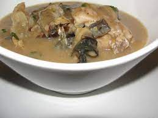

White Soup

Description
White soup is a delicacy peculiar to the Igbo tribe of Nigeria, especially
the people of Abia state. White soup is known as ofe nsala because palm
oil is not used for the preparation, unlike other traditional soups.
Ingredients
- Slices of baby fist yam
- Teaspoon of uziza seeds
- Cup of sliced uziza leaves
- Medium sizes of smoked fish
- Tablespoons of ogiri
- A handful of sliced utazi leaves
- Pieces of medium catfish
- Tablespoons of crayfish
- Maggi crayfish
- Pepper to taste
- Salt to taste
Steps
-
In a pot, bring your yam slices to a boil and cook till it’s soft. Mash
with the aid of either a food processor or mortar and pestle to form a
fine dough then set aside
-
Boil water and then add to the bowl containing your cat fish, allow to
sit for about 5 minutes for the slime to come out. Drain after and scrap
out the slime with a knife.
-
Blend your spices together, that is your uziza seeds, ogiri and
crayfish. Wash and slice your Uziza and Utazi leaves then set aside.
-
In a large pot on medium heat, add your catfish, season with Maggi
crayfish, salt, dry pepper and add water to the level of the fish. Bring
to a boil till almost done then add your yam dough (Pounded yam) in bits
till it’s dissolved into the broth.
-
Add your blended spice mix of ogiri, crayfish and uziza seeds. Stir well
to combine and allow to simmer for 3 minutes. Taste for seasoning and
adjust if necessary.
-
After which, add your utazi and uziza leaves sparingly so that the
leaves don’t overshadow the soup (remember it’s a light soup), stir into
the soup, allow to simmer for a couple of minutes then take off heat.
Afang Soup